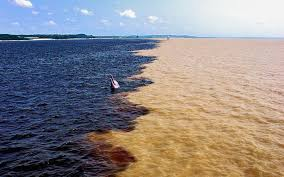
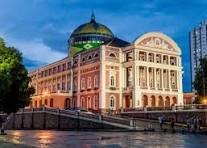
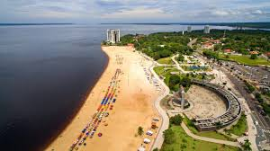

Encontro das Águas

O Encontro das Águas é sem dúvidas uma das principais atrações de Manaus. Diariamente, barcos e mais barcos vão até o local onde as águas escuras do Rio Negro e as barrentas do Solimões se encontram, e não se misturam.
O fenômeno natural ocorre em diversos rios amazônicos e é provocado pelas diferenças de pH, temperatura e velocidade das águas. O Rio Negro tem a cor escura devido à presença de húmus. Suas águas são ácidas (por ali não se criam mosquitos), quentes e também lentas. Já o Solimões tem águas amarronzada, é morno e mais rápido.
O passeio mais tradicional para ver o Encontro das Águas em Manaus é o completo, que passa não apenas pelo ponto onde os rios formam a "linha divisória", mas também inclui um ritual indígena em uma aldeia ribeirinha, aproximação do boto-cor-de-rosa, "pesca" do pirarucu e também almoço. Esse tour de barco geralmente começa entre 8h e 9h e vai até por volta das 15h. O valor depende da empresa e da capacidade do barco, mas fica entre R$ 100 e R$ 200 por pessoa.
Teatro Amazonas

O Teatro Amazonas, localizado em Manaus, é um ícone do auge do Ciclo da Borracha. Por ser o Brasil um país de dimensão continental, os brasileiros residentes nas regiões Sul e Sudeste, por vezes, não se dão conta da riqueza gerada ao país por meio da extração do látex, abundante nas seringueiras.O Teatro Amazonas é considerado um dos mais importantes do país e do mundo e, claro, um dos cartões postais de Manaus.
Foi inaugurado em 1896, no Largo de São Sebastião, centro da capital amazonense. Construído em estilo renascentista, com projeto escolhido pelo Instituto Português de Engenharia e Arquitetura de Lisboa. A ideia era que a capital amazonense tivesse uma casa de ópera à altura do poderio da elite local. E assim foi feito. Uma casa de espetáculos em alvenaria, cuja pedra fundamental foi colocada em 1884. A maioria da mão de obra técnica foi trazida da Europa, porém a decoração interna ficou nas mãos do pernambucano Crispim do Amaral e do italiano Domenico de Angelis.
Com capacidade para 700 pessoas, a sala de espetáculos está dividida em plateia e mais três níveis de camarotes.
Praia da Ponta Negra

A Praia da Ponta Negra é uma praia urbana do município de Manaus, capital do estado do Amazonas. Localizada às margens do rio Negro, no bairro homônimo, é um dos principais cartões-postais da cidade.
Possui orla urbanizada, quadras para prática de esporte e um anfiteatro, onde são realizadas apresentações musicais, espetáculos teatrais e outras atrações, tornando-a um dos principais pontos turísticos da capital amazonense.
A praia, com seus calçadões de ladrilhos hidráulicos com iluminação noturna a vapor de sódio, anfiteatro, areias finas e água morna, oferece a seu visitante confortos como estacionamento e restaurantes com comidas típicas, o que faz da praia um complexo turístico moderno e completo.